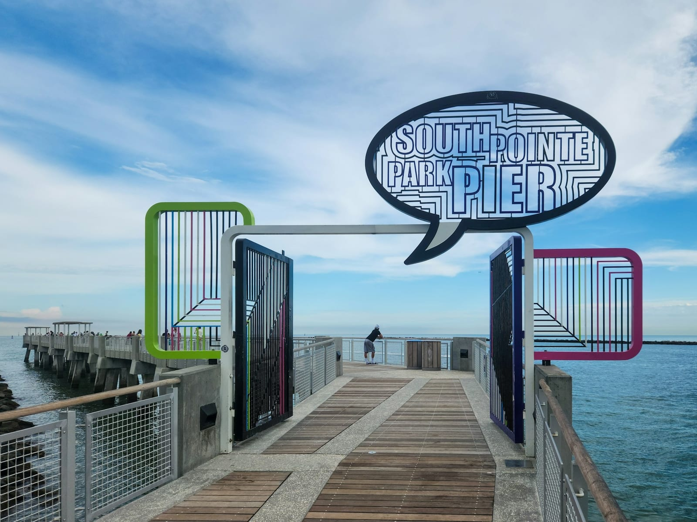

South Pointe Park Pier
Un muelle público sobre Government Cut, donde se pesca gratis y pasan los grandes cruceros del puerto. A public pier over Government Cut, where you fish for free as the port's big cruise ships pass.
En la punta sur de Miami Beach, el muelle de South Pointe Park se adentra sobre Government Cut, el canal por el que entran y salen los enormes cruceros del puerto de Miami. Al amanecer y al atardecer se llena de pescadores locales; el resto del día es un paseo con césped, bancas y un faro histórico de fondo.
At the southern tip of Miami Beach, the South Pointe Park pier reaches out over Government Cut, the channel where the port of Miami's huge cruise ships come and go. At sunrise and sunset it fills with local anglers; the rest of the day it is a stroll with lawns, benches and a historic lighthouse in the distance.
el canal junto al muelle por el que entran y salen los grandes cruceros del puerto de Miami
the channel beside the pier where the port of Miami's big cruise ships come and go
Galería
Gallery
¿Cuánto sabes de South Pointe? How well do you know South Pointe?
5 preguntas · 2 minutos · Aprende algo nuevo 5 questions · 2 minutes · Learn something new
¿Qué puedes hacer aquí? What can you do here?
Pesca de orilla Shore fishing
- Pescar gratis desde el muelle público Fish for free from the public pier
- Snook, jurel y pámpano son comunes Snook, jack and pompano are common
- Mejor al amanecer y al atardecer Best at sunrise and sunset
- Lleva tu licencia de pesca de Florida Bring your Florida fishing license
Ver los cruceros Watch the cruise ships
- Ver pasar los barcos por Government Cut See ships pass through Government Cut
- Vistas del puerto y la bahía Port and bay views
- Atardeceres sobre el agua Sunsets over the water
- Punto fotográfico del skyline Skyline photo spot
Paseo y parque Park & stroll
- Césped, bancas y paseo junto al mar Lawns, benches and a seaside walk
- Duchas y zonas de descanso Showers and rest areas
- Ideal para ir con familia Great for families
- Conecta con la playa de South Beach Connects to South Beach
Fotografía Photography
- El faro histórico y el muelle The historic lighthouse and pier
- Cruceros y skyline al fondo Cruise ships and skyline behind
- Luz dorada al amanecer Golden light at sunrise
- Reflejos sobre Government Cut Reflections over Government Cut
Antes de ir — lo que necesitas saber Before you go — what you need to know
🎒 Qué llevar What to bring
- 🎣 Caña, carrete y aparejos 🎣 Rod, reel and tackle
- 🪪 Licencia de pesca de Florida 🪪 Florida fishing license
- 🪱 Carnada y cubo 🪱 Bait and bucket
- 🧢 Gorra, gafas y protector solar 🧢 Hat, sunglasses and sunscreen
- 💧 Agua y algo de comer 💧 Water and snacks
- 💵 Efectivo/tarjeta para el estacionamiento 💵 Cash/card for parking
⚠️ Reglas importantes Important rules
- 🎣 Respeta las regulaciones de pesca de Florida 🎣 Follow Florida fishing regulations
- 📏 Cumple tallas y límites de captura 📏 Mind size and bag limits
- 🧵 Recoge tu sedal y anzuelos 🧵 Pick up your line and hooks
- 🚢 Cuidado con el tráfico de embarcaciones 🚢 Mind the boat traffic
- 🚯 Sin alcohol ni vidrio; no dejes basura 🚯 No alcohol or glass; leave no trash
📅 Cuándo ir When to go
Información práctica Practical information
Entrada Entry fee
Gratis Free Muelle público Public pierHorarios Hours
Amanecer–atardecer Sunrise–sunset Parque de South Pointe South Pointe ParkCómo llegar Getting there
~20 min desde Miami ~20 min from Miami MacArthur Causeway (I-395)Mejor época Best season
Todo el año Year-round Amanecer y atardecer Sunrise and sunsetEstacionamiento Parking
De pago Paid Junto al parque Next to the parkTip local Local tip
Llega al amanecer o al atardecer para la mejor pesca y la mejor luz. Necesitas licencia de pesca de Florida para pescar de orilla; revisa tallas y límites antes de ir. Come at sunrise or sunset for the best fishing and light. You need a Florida fishing license to shore-fish; check sizes and limits before you go.El directorio outdoor de Miami para el público hispanohablante Miami's outdoor directory for the Spanish-speaking audience
Listamos los mejores destinos de aventura de South Florida en español e inglés. Suma tu negocio — tours, alquileres, escuelas de buceo, guías de pesca — y aparece frente a quienes planean su próxima salida a South Pointe. We list South Florida's best adventure spots in Spanish and English. Add your business — tours, rentals, dive schools, fishing guides — and show up in front of people planning their next trip to South Pointe.